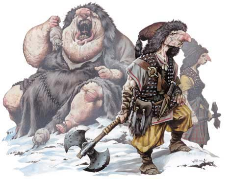

在约瑟园位面的居民中，芬瑟通常被称为巨魔，尽管这两种生物完全无关。芬瑟是巨人――尽管他们既有教养又聪慧，且只愿不被打扰。芬瑟有两种不同类型：普通芬瑟（雄性和雌性）以及可怕的拉卡――经历可怕异变、变成巨大的野蛮怪物并在乡间肆虐的雌性芬瑟。
阳光对芬瑟来说是禁忌；一旦身体完全暴露在阳光下，它们就会石化。由于这一弱点，它们只会在黄昏之后很久才会在覆盖着草皮的家园外被遇到。
与其他巨人一样，芬瑟能高效地投掷岩石，并且通常手中就有几块。
投石（Ex）：成年芬瑟在投掷岩石时攻击检定获得+1种族加值。普通芬瑟可以投掷重40至50磅的岩石（小型物体），最多五个射程增量。拉卡可以投掷重60至80磅的岩石（中型物体）。岩石的射程增量为120英尺。
接石（Ex）：普通芬瑟可以接住小型、中型或大型岩石（或形状相似的抛射物）。拉卡可以接住最大为超大型的岩石。每轮一次，本应被岩石击中的芬瑟可以以自由动作进行反射豁免来接住它。接石的DC基于岩石的大小（见下表）。如果抛射物有攻击检定加值，DC增加该数值。芬瑟必须意识到并准备好迎接攻击。
岩石大小 DC 小型 15 中型 20 大型 25 超大型 30
类法术能力：随意――化泥为石、化石为泥。施法者等级9；豁免DC 8（普通芬瑟）或9（拉卡）+ 法术等级。
阳光脆弱（Ex）：如果芬瑟被困在阳光下，它会像无豁免的石化术一样变成石头。如果在阳炎射线或阳炎爆法术区域内，芬瑟必须进行强韧豁免，否则除了法术的正常效果外还会石化。芬瑟可以自动感知太阳即将落下或升起的时间，最多提前1小时。
Rock Size：DC
--------------：----
Small：15
Medium-size：20
Large：25
Huge：30
大型巨人（跨位面）

| 生命骰： | 4d8+8（26HP） |
| 先攻： | +1 |
| 速度： | 40英尺 |
| 防御等级： | 18（�C1体型，+1敏捷，+6天生，+2皮甲），接触10，措手不及17 |
| 基本攻击／擒抱： | +3/+12 |
| 攻击： | 超大型巨斧 +7近战，或掷石 +4远程 |
| 全力攻击： | 超大型巨斧 +7近战，或掷石 +4远程 |
| 伤害： | 超大型巨斧 2d8+7，掷石 1d6+5 |
| 面宽／触及： | 10英尺/10英尺 |
| 特殊攻击： | 投石、类法术能力、法术 |
| 特殊能力： | 黑暗视觉60英尺、昏暗视觉、接石、感知孪生、阳光脆弱 |
| 豁免： | 强韧 +6，反射 +2，意志 +2 |
| 属性： | 力量 20，敏捷 12，体质 15，智力 13，感知 12，魅力 7 |
| 技能： | 攀爬 +9，躲藏 +1，聆听 +5，侦察 +5，生存 +6 |
| 专长： | 调制药水B、近程射击、精准射击 |
| 地域： | 任何陆地（约瑟园） |
| 组织： | 单独、成对、家庭（4�C6）或村庄（11�C20外加35%非战斗人员） |
| 挑战等级： | 5 |
| 宝物： | 标准 |
| 阵营： | 总是混乱中立 |
| 进化： | 按角色职业 |
| 等级调整： | +5 |
芬瑟的体型从接近人类身高到山丘巨人大小不等。它们是不吸引人的生物，有着巨大的头和巨大的鼻子。大多数芬瑟有疣状皮肤和经常错位的深黑眼睛。芬瑟通常穿着精致的皮甲、背心和各种风格的大黑兔毛帽。
芬瑟不是社交生物，更喜欢在偏远地点建造村庄，如岩石海岸悬崖、高山和偏僻沼泽。绝大多数芬瑟出生为异卵双胞胎，两个后代保持亲密。这些双胞胎几乎有心灵感应连接；每个人随时知道其兄弟姐妹的位置和状态。一方的死亡会导致另一方尽其所能复仇――甚至穿越到物质位面寻求报复。
几乎所有芬瑟都有施法能力。那些没有显示出任何天赋的会被家庭流放，被迫在约瑟园游荡。芬瑟是强大的预言师，并有能力调制几乎任何种类的魔法药水。所有芬瑟都知道如何制造一种特殊药水，可以将被石化的芬瑟恢复正常。这种药水的效果类似于解除石化法术，但只对芬瑟有效。
芬瑟会说巨人语和通用语。
由于其害羞的天性，芬瑟通常保持距离，并用岩石和各种法术赶走闯入者。所有芬瑟都有化泥为石的能力，它们用它来保持稳定的岩石供应以投向对手。它们还使用化石为泥来困住敌人。
芬瑟更喜欢攻击使用阳光束或阳炎爆等法术的生物。
法术：芬瑟可以像5级法师一样施放奥术（4/4/2/1；豁免DC 11 + 法术等级）。芬瑟有其穿戴护甲的正常奥术失败率（皮甲为10%）。典型法术列表：0级――侦测魔法、幻音术、冰冻射线、阅读魔法；1级――七彩喷射、魔法飞弹、隐雾术、防护守序；2级――牛之力量、黑暗术；3级――闪电束。
感知孪生（Ex）：芬瑟知道其孪生兄弟的位置和健康状况，如同无距离限制的状态法术。如果孪生兄弟的死亡是由另一个或多个生物的恶意意图造成的，存活的芬瑟可以追踪这些个体，如同无距离限制的生物定位术（译注：原文为locate person，但并未发现这个法术，推测为Locate Creature）。
法师是芬瑟的偏好职业。获得法师等级的芬瑟将其天生施法能力（5级法师）加到其法师职业等级上，并据此确定每日法术。例如，一只3级芬瑟法师拥有8级法师的施法能力。芬瑟的有效角色等级（ECL）等于其职业等级 +9。
超大型巨人（跨位面）
| 生命骰： | 12d8+60（114HP） |
| 先攻： | �C1 |
| 速度： | 40英尺 |
| 防御等级： | 21（�C2体型，�C1敏捷，+11天生，+3镶嵌皮甲），接触7，措手不及21 |
| 基本攻击／擒抱： | +9/+25 |
| 攻击： | 挥击 +17近战，或掷石 +8远程 |
| 全力攻击： | 2次挥击 +17近战，或掷石 +8远程 |
| 伤害： | 挥击 2d6+8，掷石 1d6+8 |
| 面宽／触及： | 15英尺/15英尺 |
| 特殊攻击： | 临死诅咒、投石、类法术能力 |
| 特殊能力： | 黑暗视觉60英尺、昏暗视觉、接石、阳光脆弱 |
| 豁免： | 强韧 +13，反射 +3，意志 +6 |
| 属性： | 力量 27，敏捷 8，体质 20，智力 3，感知 15，魅力 8 |
| 技能： | 攀爬 +11，躲藏 �C9，聆听 +6，侦察 +6，生存 +6 |
| 专长： | 顺势斩、大顺势斩、近程射击、猛力攻击、精准射击 |
| 地域： | 任何陆地（约瑟园） |
| 组织： | 单独、家庭（1只拉卡外加4�C6只芬瑟）或村庄（1只拉卡外加11�C20只芬瑟和35%非战斗人员） |
| 挑战等级： | 8 |
| 宝物： | ― |
| 阵营： | 总是混乱中立 |
| 进化： | ― |
| 等级调整： | +4 |
雌性芬瑟生下一对幼崽后，可能会变形为拉卡。如果她这样做，她会开始生长，直到身高达到20英尺、体重6000磅。在此期间她的智力会衰退，其余家庭必须搜刮周围地貌以找到足够的食物来维持拉卡的生命并安抚她。家庭往往会变得狂暴，在拉卡身后造成各种破坏。然而，家庭会继续供养和保护拉卡直到她死亡，这通常是在变形后大约一年。
当拉卡死亡时，曾供养她的家族便会收拾行囊，在约瑟园的荒野中四处流浪，这一活动被称为"漫长步行"。这些被流放的芬瑟成为威胁，它们出于愤怒、怨恨或单纯的迷惘而掠夺乡间。
由于失去了她曾经拥有的大部分智力，拉卡只是用她的两只巨大拳头猛击或向任何使她不快的东西投掷岩石。
拉卡失去施法能力，但仍保留芬瑟的类法术能力。
临死诅咒（Su）：就在拉卡被杀死之前，她会对责任者施加临死诅咒。这如同由11级施法者施放的指使术（DC 20），通常涉及强迫受影响的对手偿还或服务于拉卡的家庭。
野蛮人是拉卡的偏好职业。拉卡的有效角色等级（ECL）等于其职业等级 +16。因此，一只1级拉卡野蛮人的ECL为17，相当于17级角色。